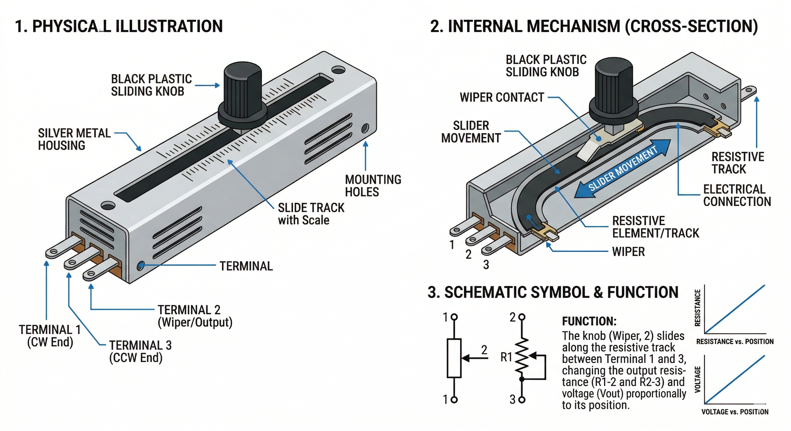

A Slide Potentiometer is a type of linear variable resistor. Unlike a rotary potentiometer that you turn, a slide pot moves in a straight line, making it perfect for faders, level controls, and position sensing.

Functionally, a slide potentiometer is identical to a rotary one:
| Pin | Function |
|---|---|
| VCC | Power supply. Connect to Arduino 5V. |
| GND | Common ground connection. |
| OUT / SIG | Analog output voltage. Connect to an Analog Pin (e.g., A0). |
In the OpenHW Studio emulator, you can click and drag the slider knob vertically or horizontally to simulate physical movement. Your Arduino code will see the value change smoothly from 0 to 1023.
int sliderPin = A0;
void setup() {
Serial.begin(9600);
}
void loop() {
int value = analogRead(sliderPin);
Serial.print("Slider Position: ");
Serial.println(value);
delay(100);
}